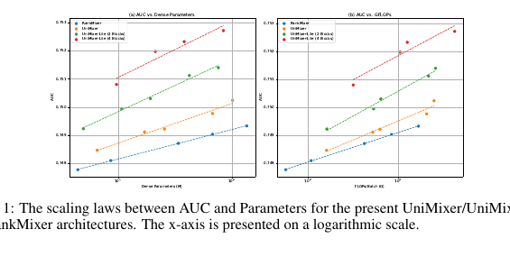
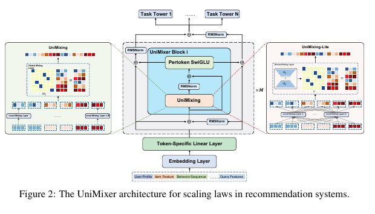
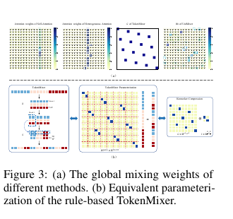
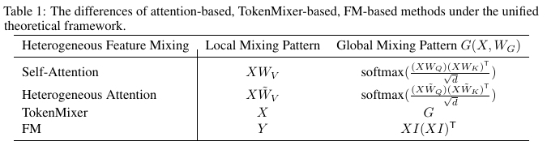
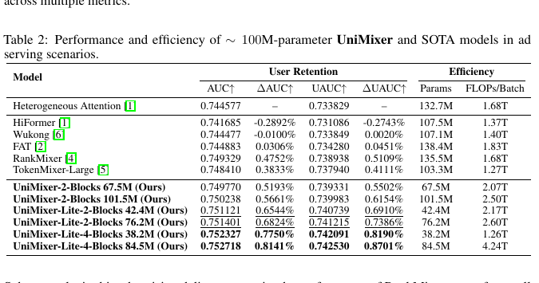
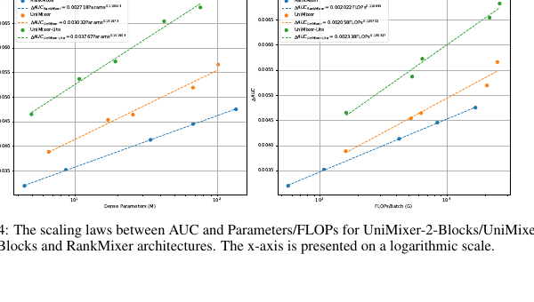
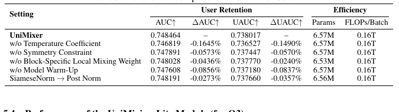
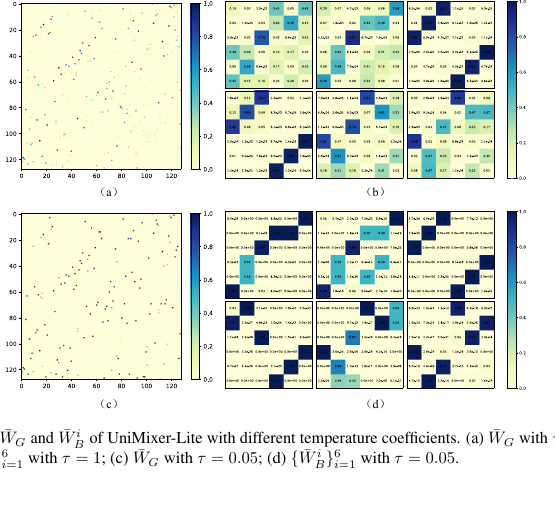
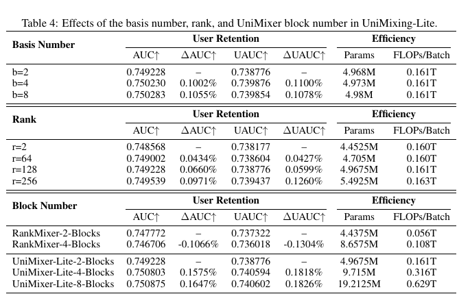
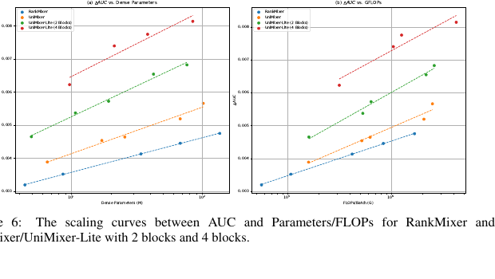

UniMixer
1. 基本信息
- 标题：UniMixer: A Unified Architecture for Scaling Laws in Recommendation Systems
- 作者：Mingming Ha, Guanchen Wang, Linxun Chen, Xuan Rao, Yuexin Shi, Tianbao Ma, Zhaojie Liu, Yunqian Fan, Zilong Lu, Yanan Niu, Han Li, Kun Gai
- 机构：Kuaishou Technology
- 时间：2026-04-02（arXiv v2）
- 链接：https://arxiv.org/abs/2604.00590
- 关键词：Scaling Laws、Recommender System、TokenMixer、Heterogeneous Feature Interaction、FM、Sinkhorn-Knopp
- pdf位置：
C:\Users\chaol\Desktop\推荐论文阅读\scaling\UniMixer.pdf - 笔记位置：
论文笔记/精排/模型扩展/UniMixer.md - 分类：精排 / 模型扩展
1.1 相关论文
- RankMixer：UniMixer 的直接前置和最强对照基线；论文把 RankMixer/TokenMixer 的规则 token mixing 改写成可学习的参数化混合矩阵，并在主结果与 scaling curve 中直接对比。
2. 一句话总结
这篇论文想解决的是推荐系统 scaling block 过于割裂的问题：attention-based、TokenMixer-based、FM-based 方法都能 scale，但各自的结构和归纳偏置完全不同。UniMixer 的核心做法是把 RankMixer 这类规则 TokenMixer 重新解释成一个可参数化的矩阵混合操作，再用局部混合矩阵和全局混合矩阵统一表示 attention、TokenMixer 与 FM，从而得到一个可学习、可约束、可压缩，并且更适合扩深扩宽的推荐 scaling backbone。
3. 论文在解决什么问题
3.1 推荐 scaling 的矛盾
LLM 的 scaling law 说明参数、数据和计算增加后性能可以稳定提升，推荐系统也在追求类似规律。但推荐输入和 NLP token 不一样：用户、物品、上下文、行为序列、交叉特征来自不同语义空间，直接拿 Transformer 的 self-attention 做 token-token 内积并不天然合理。
论文把当前推荐 scaling block 分成三类：
- Attention-based：用 token-specific 的 Q/K/V 投影处理异构特征，比如 HiFormer/FAT/HHFT。优点是可学习，缺点是 attention 权重来自异构空间内积，训练早期容易尖锐、稀疏或不稳定。
- TokenMixer-based：以 RankMixer 为代表，用规则化、无参数的 token 重排做跨 token 信息交换。优点是省算力，缺点是缺乏可学习性，并且通常要求
head 数 H = token 数 T才能保持残差维度合法。 - FM-based：以 Wukong 为代表，用显式二阶交互矩阵建模 feature crossing。优点是高效且可解释，缺点是偏低阶交互，继续放大参数/FLOPs 后收益受限。
作者的关键问题是：能不能设计一个统一 scaling module，让它同时有 TokenMixer 的高效、attention 的可学习局部投影、FM 的统一交互视角，并且在参数/FLOPs 增加时有更好的 ROI。
3.2 Figure 1：论文先给出目标现象

Figure 1 把论文的主张提前放出来：随着 dense parameters 或 FLOPs 增加，RankMixer、UniMixer、UniMixer-Lite 都呈现 AUC scaling trend，但 UniMixer-Lite 的曲线更陡。这个图不是方法图，而是论文要证明的目标：新的统一混合模块不仅要涨点，还要在同样扩参/增算力时涨得更快。
4. 方法总览
4.1 Figure 2：整体架构

Figure 2 是整篇论文的主架构。输入侧先做 feature tokenization：把 user profile、item feature、behavior sequence、query feature 等异构字段映射成 embedding，再通过 token-specific linear layer 切成固定维度 token。中间堆叠 M 个 UniMixer block；每个 block 内部以 UniMixing + Pertoken SwiGLU 为主体，并用 SiameseNorm 维持深层训练稳定。输出侧经过 RMSNorm 后接多个 task tower。
图里左右两侧分别展示两个 mixing 版本：
- UniMixing：完整版本，包含一个 global mixing layer
W_G和多组 local mixing layerW_B^i。 - UniMixing-Lite：轻量版本，用低秩矩阵
A_G B_G近似 global mixing，用少量 basis matrices 组合出每个 block-specific local mixing matrix，减少参数和计算。
这张图要表达的不是简单替换 RankMixer 的 token mixing，而是把推荐模型里的“局部特征投影”和“全局 token/block 交互”拆开，使它可以同时解释 attention、TokenMixer 和 FM。
4.2 Feature Tokenization
输入特征先按语义域拆分，例如 user profile、item features、behavior sequence、query features：
每个 domain 内的特征先变成 domain embedding：
然后把所有 domain embedding 拼成一个长向量 E，等分成若干块，并用 token-specific linear layer 投影到统一 token 维度：
这里的隐藏条件是：不同推荐特征原本不在同一语义空间，不能直接当作 NLP token 处理；tokenization 的作用是先把异构 feature world 压成少量固定维度 token，为后面的统一 mixing 提供形状一致的输入 X \in \mathbb{R}^{T \times D}。
5. UniMixer Block
5.1 Figure 3：为什么要重新参数化 TokenMixer

Figure 3(a) 对比了 self-attention、heterogeneous attention、TokenMixer 与 UniMixer 的 global mixing weights。作者认为 heterogeneous attention 在训练早期可能出现很尖锐、很稀疏的 attention pattern：某些行只关注极少数 token，导致 Q/K 的梯度传播困难；在大规模异构特征下，也可能出现交互分数过小、缺乏区分度的问题。
Figure 3(b) 给出最关键观察：RankMixer/TokenMixer 的规则重排可以写成一个大 permutation matrix 乘以 flatten(X)：
这个等价形式很重要，因为它把“规则重排”变成了“矩阵混合”。自然想法是把 W^{perm} 学出来，但 W^{perm} \in \mathbb{R}^{TD \times TD}，直接参数化会带来 O(T^2D^2) 的参数和计算，工业场景不可接受。
作者进一步观察到这个 permutation matrix 有四个性质：
- 可压缩：可以分解成 Kronecker product，
W^{perm}=G \otimes I。 - 双随机性：每行每列和为 1。
- 稀疏性：每行每列只有一个非零元素。
- 对称性：当
T = H时是对称矩阵；如果T \neq H，对称性不再成立。
这里也解释了 RankMixer 中容易卡住的维度条件：规则 TokenMixer 要把输出从 H \times (TD/H) 还原到 T \times D，通常需要设定 H = T，这样残差连接才可以直接做。UniMixer 的目标之一就是去掉这个限制，让混合模式不再被 T = H 绑定。
5.2 Unified Token Mixing：局部混合 + 全局混合
UniMixer 不再用 T 和 D 直接定义规则重排，而是把 flatten(X) 看作长度为 L 的 embedding vector，并设定 block size 为 B。要求 L 能被 B 整除，于是可以切成 L/B 个 block。
原始写法是：
其中 W_B^i 负责第 i 个 block 内部的 local mixing，W_G 负责 block 之间的 global mixing。直接构造广义 Kronecker 矩阵仍然会产生很大的中间变量，所以作者把计算流水线改写成两步：
- 先把
flatten(X)均匀切成L/B个长度为B的向量：
- 每个 block 先乘自己的
W_B^i，得到局部交互后的矩阵H，再让W_G在 block 维度上做全局混合：
这个改写保留了原始广义 Kronecker mixing 的结果，但避免显式生成 [L, L] 大矩阵；复杂度从 O(L^2) 降到 O(L^2/B + LB)。这里成立的隐藏条件是：flatten(X) 必须能被固定 block size B 整除，否则 local block 切分和后续 reshape 都不合法。
输出形状仍然是长度为 L 的向量，reshape 回原始 token 表示后才能与输入做残差：
也就是说，UniMixing 内部虽然经历了 flatten、split、local mixing、global mixing，但最终必须回到与 X 相同的形状，残差连接才是合法的。
5.3 约束：让可学习矩阵保留 TokenMixer 的好性质
为了让 W_G 和 W_B^i 学出来以后仍然像 permutation/mixing matrix，而不是退化成任意稠密矩阵，作者加了三类约束：
对称化保证 symmetry；Sinkhorn-Knopp 通过指数化和交替行列归一化，让矩阵近似满足双随机性；温度系数 \tau 控制稀疏程度。tau 越低，矩阵越尖锐、越接近 sparse permutation；但过低会让梯度变弱甚至不稳定，所以训练策略里还要配合 warm-up 或 temperature annealing。
5.4 Table 1：统一视角

Table 1 是论文理论部分的压缩版。作者把各种方法都写成：
在这个表达里，差别只在两处：
- Local Mixing Pattern：每个 token/block 内部如何投影，例如 attention 的
XW_V、heterogeneous attention 的 token-specificX\tilde W_V、FM 的Y、TokenMixer 的恒等X。 - Global Mixing Pattern：block 之间如何决定交互强度，例如 self-attention 的
softmax((XW_Q)(XW_K)^T/\sqrt d)、FM 的XI(XI)^T、TokenMixer 的固定G。
我的理解是，UniMixer 的“统一”不是说这些方法完全等价，而是把它们的差异压到同一个坐标系里：一个模块先做局部投影，再做全局交互。这样后续设计可以明确选择：global mixing 要不要依赖输入、local mixing 要不要 token-specific、矩阵约束要不要接近 permutation。
5.5 UniMixing-Lite：低秩全局 + basis 局部
完整 UniMixing 的问题是：block 粒度越细，local matrices 数量越多，W_G 也越大；很多 local interaction pattern 可能是冗余的。UniMixing-Lite 做两处压缩：
- 局部混合用 basis 组合：不再为每个 block 独立存一个完整
W_B^i，而是维护b个 basis matrices{Z_\ell}_{\ell=1}^b，每个 block 用自己的权重\omega^i组合：
- 全局混合用低秩近似：
最终：
这个设计的取舍很清楚：保留 TokenMixer 低参数 global pattern 的优势，同时保留 attention 里“不同局部子空间用不同投影”的能力，但不为每个 block 暴力维护完整独立矩阵。
5.6 Pertoken SwiGLU 与 SiameseNorm
UniMixing 之后，论文借鉴 TokenMixer-Large 的思路加入 pertoken SwiGLU：
它和 RankMixer 的 per-token FFN 思路一致：推荐 token 来自不同 feature subspace，不应该完全共享一套 FFN 参数；token-specific FFN 可以保护不同语义 token 的差异性。
深层稳定性方面，作者明确批评当前 RankMixer 缺少面向深层架构的专门设计，导致沿 depth scaling 的效果有限。UniMixer 引入 SiameseNorm，用两条 coupled streams 更新：
最后融合：
这部分的作用不是提高单层表达力，而是让模型加深后仍然能稳定训练。后面的 Table 4 也显示 RankMixer 从 2 blocks 加到 4 blocks 反而退化，而 UniMixer-Lite 加深仍有收益。
5.7 训练策略：温度不能一开始就太低
稀疏矩阵对效果有帮助，但小温度会让权重过尖，梯度稀疏且不稳定。作者给出两种策略：
- 线性退火：从
\tau_start=1.0逐步降到\tau_end=0.05。 - warm-up/retrain：先用高温训练好模型，再用低温初始化继续训练。
公式为：
Table 3 中 w/o Temperature Coefficient 和 w/o Model Warm-Up 都显著掉点，说明这不是工程细节，而是让“可学习但仍稀疏”的 mixing matrix 真正可训练的必要条件。
6. 实验与结果
6.1 实验设置
实验来自快手广告投放场景的真实用户留存数据，超过 7 亿用户样本，覆盖一年日志，包括数值特征、ID 特征、交叉特征和序列特征。标签是用户首次激活后次日是否回到快手。效果指标用 AUC 和 UAUC，效率指标用 dense parameters、FLOPs 和 MFU。所有实验在 40 张 GPU 的混合分布式训练框架上完成，dense 和 sparse 部分都用 Adam，学习率 0.001。
6.2 Table 2：主结果

Table 2 对比约 100M 参数量级的 SOTA。几个关键点：
- RankMixer 在非 UniMixer 方法里最强，AUC 0.749329，UAUC 0.738938，因此后续 scaling curve 选择它做最强对照是合理的。
- UniMixer-2-Blocks 101.5M 达到 AUC 0.750238，比 RankMixer 高；但更重要的是 UniMixer-Lite 的参数效率更好。
- UniMixer-Lite-4-Blocks 38.2M 已达到 AUC 0.752327、UAUC 0.742091，只用 38.2M 参数就超过 135.5M 的 RankMixer。
- UniMixer-Lite-4-Blocks 84.5M 达到最高 AUC 0.752718、UAUC 0.742530。
这个表支撑的是“统一结构 + 轻量混合”确实能把更多性能挤出来，而不只是理论上把几类方法写成一个公式。
6.3 Figure 4：Scaling law 对比

Figure 4 对比 RankMixer、UniMixer、UniMixer-Lite 在参数和 FLOPs 维度上的 scaling curve。作者拟合出的关系为：
作者特别强调 scaling exponent 比前面的系数更能决定扩展收益。UniMixer-Lite 在参数和 FLOPs 两条线上都有最高 exponent，说明它不是只在某个固定规模下更强，而是更能从继续放大模型容量中获益。
6.4 Table 3：组件消融

Table 3 的消融显示，移除任何关键约束或模块都会降 AUC/UAUC：
- 去掉 temperature coefficient：AUC -0.1645%，UAUC -0.1490%，是最大降幅，说明稀疏控制很关键。
- 去掉 symmetry constraint：AUC -0.0573%，说明把 mixing matrix 保持成接近 TokenMixer permutation 的结构有价值。
- 去掉 block-specific local mixing weight：AUC -0.0436%，说明不同 block 拥有不同局部交互模式不是冗余设计。
- 去掉 warm-up：AUC -0.0856%，说明低温稀疏训练需要稳定初始化。
- SiameseNorm 换成 PostNorm：AUC -0.0273%，说明它对深层训练有帮助，但不是单层性能的最大来源。
这组实验的意义在于：UniMixer 的收益不是来自一个泛泛的“大矩阵更灵活”，而是来自“可学习矩阵 + 双随机/稀疏/对称约束 + 可训练温度策略”的组合。
6.5 Figure 5：温度如何影响 mixing matrix

Figure 5 可视化 UniMixer-Lite 的 global matrix \bar W_G 和前 6 个 local matrices \bar W_B^i。设置中 input embedding dimension 是 768，block size 是 6，所以 \bar W_G \in \mathbb{R}^{128\times128}，W_B^i\in\mathbb{R}^{6\times6}，低秩矩阵为 A_G\in\mathbb{R}^{128\times16}、B_G\in\mathbb{R}^{16\times128}。
图里 \tau=0.05 的矩阵比 \tau=1 更尖锐，说明低温确实把 interaction distribution 推向更稀疏的模式。作者还指出，虽然用了低秩近似和 basis matrices，Sinkhorn-Knopp 后矩阵仍能保持接近 full-rank 的表达能力。我的理解是，UniMixer-Lite 的核心不是简单降秩，而是用 Sinkhorn 约束把低秩/basis 组合重新投到更像可用 mixing matrix 的空间里。
6.6 Table 4 与 Figure 6：UniMixing-Lite 的扩展因素

Table 4 分三组看 UniMixing-Lite：
- basis number 从
b=2增到b=4/8会提升 AUC/UAUC，且参数几乎不变；作者认为增加 basis 比增加 global rank 更有参数效率。 - rank 从
r=2增到r=256也能涨点，但参数随之增加，收益不如 basis 高效。 - block number 里最关键：RankMixer 从 2 blocks 到 4 blocks 反而 AUC -0.1066%、UAUC -0.1304%；UniMixer-Lite 从 2 blocks 到 4 blocks 明显涨点，8 blocks 仍略涨但边际收益变小。

Figure 6 把 depth scaling 画成曲线。它支持作者对 RankMixer 的批评：规则 TokenMixer 如果没有更好的深层稳定设计，堆深不一定带来收益；UniMixer-Lite 由于引入可学习 mixing、约束和 SiameseNorm，更适合沿深度方向继续 scale。
6.7 线上 A/B
线上部署在快手多个广告投放场景，指标是 30 天观察窗口里的 Cumulative Active Days（CAD），排除安装日 day 0。论文报告多个场景下 D1-D30 的 CAD 平均提升超过 15%。这个结果说明离线 AUC/UAUC 的提升确实能转化到业务指标，但论文没有展开更细的线上分场景表，因此这里更适合作为外部有效性证据，而不是用于比较不同模块贡献。
7. 重要理解与局限
7.1 UniMixer 真正统一了什么
UniMixer 统一的不是所有推荐模型，而是三类 feature interaction block 的计算骨架：局部投影 + 全局交互。attention 的 global mixing 依赖输入相似度；TokenMixer 的 global mixing 是输入无关的规则矩阵；FM 的 global mixing 来自显式二阶交互。UniMixer 把这些都放进 G(X,W_G) 这个位置，再把 local projection 放进 W_B^i 这个位置。
这个视角有用，因为它告诉后续模型设计应该从两个问题切入：
- global interaction pattern 应该是 input-dependent、parameterized，还是 rule-based？
- local mixing pattern 应该共享、token-specific，还是 basis-composed？
7.2 这篇和 RankMixer 的关系
RankMixer 的核心贡献是证明规则 TokenMixer 可以在工业 ranking 里高效 scale。UniMixer 的核心贡献是进一步问：既然 TokenMixer 是一种 permutation-like mixing，它能不能变成可学习且可约束的矩阵？所以 UniMixer 可以看作对 RankMixer 的两层推进：
- 理论上，把规则 token mixing 改写为矩阵乘法和 Kronecker/compressed form。
- 实践上，用 Sinkhorn、temperature、SiameseNorm、Lite 压缩让这个矩阵版本更适合扩深和扩参。
7.3 需要注意的局限
这篇论文的实验很工业，但也有几个阅读时要记住的限制：
- 数据集是快手广告投放场景的私有留存任务，外部复现难度很高。
- 线上只报告 CAD 平均提升，没有给出分场景、置信区间或完整流量配置。
- UniMixer 的理论统一主要针对 feature interaction/scaling block；对长序列行为建模、生成式推荐等方向只是结论中的展望。
- 低温稀疏矩阵的训练依赖 warm-up/annealing，说明方法对训练流程较敏感，不能只按公式替换模块。
8. 记忆锚点
- UniMixer = 把 TokenMixer 的规则重排参数化，并用
local W_B^i + global W_G统一 attention、TokenMixer、FM。 - 核心工程收益来自计算流水线改写：不用显式构造大 permutation matrix，复杂度从
O(L^2)降到O(L^2/B + LB)。 - 核心约束是 symmetry + Sinkhorn 双随机 + temperature sparsity。
- UniMixing-Lite 用 global 低秩近似和 local basis 组合，参数效率最好。
- 主结果中，UniMixer-Lite-4-Blocks 38.2M 已超过 135.5M RankMixer；84.5M 版本达到最高 AUC/UAUC。
- 深度扩展是重点：RankMixer 加深退化，UniMixer-Lite 加深仍涨点，SiameseNorm 是其中的稳定性设计。